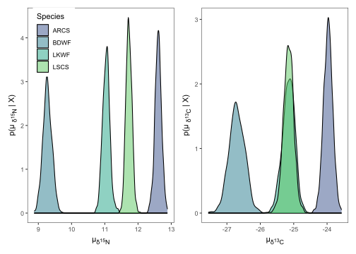
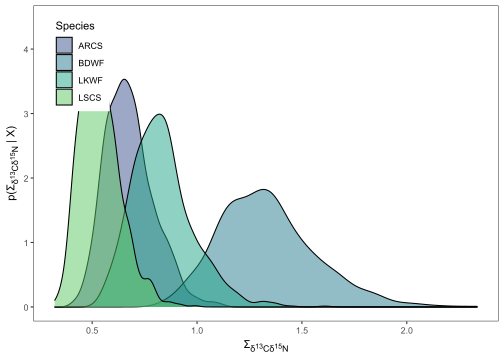
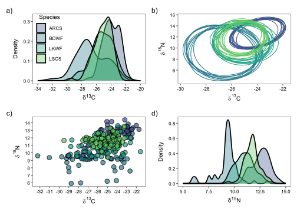
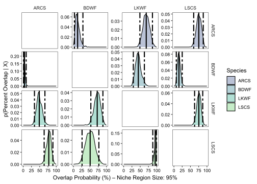
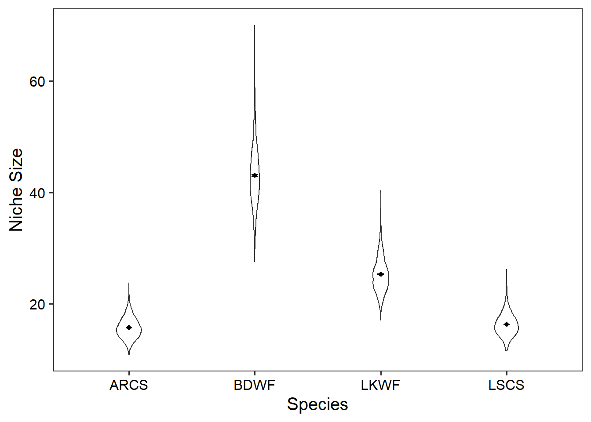

install.packages("usethis")
usethis::use_course("https://github.com/benjaminhlina/nicheROVER-ggplot-vignette/archive/refs/heads/main.zip")0.1 Our Objectives
The purpose of this vignette is to use {ggplot2} to visualize estimates of trophic niche size and similarities for multiple freshwater fish.
This vignette can be used for additional purposes including estimating niche size and similarities among different groups of aquatic and/or terrestrial species. Furthermore, niche size and similarities for different behaviours exhibited within a population can be made using behavioural data generated from acoustic telemetry (e.g., differences in habitat occupancy).
You can download and unzip this vignette using the following code:
0.2 Disclaimer
Sections of this vignette have been replaced with the package {nichetools} which improves this workflow. I have written a vignette for the package that is available on the package’s website or on this blog. I highly suggest using that workflow going forward. This vignette will not be taken down but will also not be maintained.
0.3 Bring in trophic niche data
First we will load the necessary packages to preform the analysis and visualization. We will use {nicheROVER} and {ellipse} to preform the analysis. We will use {dplyr}, {purrr}, and {tidyr} to manipulate data and iterate processes. Lastly, we will use {ggplot2}, {ggtext}, and {patchwork} to plot, add labels and arrange plots.
I will add that many of the {dplyr} and {tidyr} functions and processes can be replaced using {data.table} which is great when working with large datasets.
{
library(dplyr)
library(ellipse)
library(ggplot2)
library(ggtext)
library(here)
library(nicheROVER)
library(purrr)
library(patchwork)
library(readr)
library(stringr)
library(tidyr)
}For the purpose of the vignette we will be using the fish dataframe that is available within {nicheROVER}. We will remove \(\delta\)34S for simplicity of the vignette. If more than two isotopes or metrics are being used to compare niche sizes and similarities, you can modify the code to include the additional isotopes or metrics.
We will first use the function janitor::clean_names() to clean up column names and remove \(\delta\)34S column. For your purposes you will need to replace fish with your dataframe either by loading a csv or rds with your data. You can do this multiple ways, I prefer using readr::read_csv() but base R works perfectly fine.
df <- fish %>%
janitor::clean_names() %>%
select(-d34s)If there are any isotopic values that did not run and are NA, they will need to be removed because {nicheROVER}’s functions will not accommodate values of NA.
0.4 Estimate posterior distribution with Normal-Inverse-Wishart (NIW) priors.
We will take 1,000 posterior samples for each group. You can change this but suggest nothing less than 1,000.
nsample <- 1000We will then split the dataframe into a list with each species as a dataframe object within the list, We will then iterate over the list, using map() from {purrr}, to estimate posterior distribution using Normal-Inverse-Wishart (NIW) priors.
fish_par <- df %>%
split(.$species) %>%
map(~ select(., d13c, d15n)) %>%
map(~niw.post(nsample = nsample, X = .))0.5 Extract \(\mu\) values
We will use a combination of map() and pluck() to first extract the list of posteriors for \(\mu\). We will extract each vector object for \(\mu\) of each species using imap() and convert them into a tibble.
We then will merge each \(\mu\) dataframe together for each species using bind_rows(). We will add species and sample_number back into the dataframe.
df_mu <- map(fish_par, pluck, 1) %>%
imap(~ as_tibble(.x) %>%
mutate(
metric = "mu",
species = .y
)
) %>%
bind_rows() %>%
mutate(
species = factor(species,
levels = c("ARCS", "BDWF", "LKWF", "LSCS"))
) %>%
group_by(species) %>%
mutate(
sample_number = 1:1000
) %>%
ungroup()We need to manipulate df_mu into long format instead of wide format for the rest of the analysis. We will also add in a column that is the element abbreviation and neutron number to be used in axis labelling.
df_mu_long <- df_mu %>%
pivot_longer(cols = -c(metric, species, sample_number),
names_to = "isotope",
values_to = "mu_est") %>%
mutate(
element = case_when(
isotope == "d15n" ~ "N",
isotope == "d13c" ~ "C",
),
neutron = case_when(
isotope == "d15n" ~ 15,
isotope == "d13c" ~ 13,
)
)0.6 Extract \(\Sigma\) values
We will use a combination of map() and pluck() to first extract the list of posteriors for \(\Sigma\). We will extract each vector object from each of the \(\Sigma\) vectors for each species using imap() and convert them into a tibble.
We will manipulate df_sigma from wide to long format. When doing so we create two columns, id and isotope, that identify the two isotopes that \(\Sigma\) is being estimated for.
df_sigma <- map(fish_par, pluck, 2) %>%
imap(~ as_tibble(.x) %>%
mutate(
metric = "sigma",
id = c("d15n", "d13c"),
species = .y
)
) %>%
bind_rows() %>%
pivot_longer(cols = -c("id", "species", "metric"),
names_to = "isotope",
values_to = "post_sample"
) %>%
separate(isotope, into = c("isotopes", "sample_number"), sep = "\\.")We then need to remove \(\Sigma\) values for when the two columns are the same isotope.
df_sigma_cn <- df_sigma %>%
filter(id != isotopes)0.7 Plot posterior distrubtion of \(\mu\) and \(\Sigma\)
For most plotting within this vignette, I will split() the dataframe by isotope, creating a list that I will then use imap() to iterate over the list to create plots. We will use geom_density() to represent densities for both \(\mu\) and \(\Sigma\). Plot objects will then be stored in a list.
First we will plot \(\mu\) for each isotope. We will use {patchwork} to configure plots for multi-panel figures. This package is phenomenal and uses math operators to configure and manipulate the plots to create multi-panel figures.
For labelling we are also going to use element_markdown() from {ggtext} to work with the labels that are needed to correctly display the isotopic signature. If you are working other data please replace.
posterior_plots <- df_mu_long %>%
split(.$isotope) %>%
imap(
~ ggplot(data = ., aes(x = mu_est)) +
geom_density(aes(fill = species), alpha = 0.5) +
scale_fill_viridis_d(begin = 0.25, end = 0.75,
option = "D", name = "Species") +
theme_bw() +
theme(panel.grid = element_blank(),
axis.title.x = element_markdown(),
axis.title.y = element_markdown(),
legend.position = "none"
) +
labs(
x = paste("\u00b5<sub>\U03B4</sub>", "<sub><sup>",
unique(.$neutron), "</sup></sub>",
"<sub>",unique(.$element), "</sub>", sep = ""),
y = paste0("p(\u00b5 <sub>\U03B4</sub>","<sub><sup>",
unique(.$neutron), "</sub></sup>",
"<sub>",unique(.$element),"</sub>",
" | X)"), sep = "")
)
posterior_plots$d15n +
theme(legend.position = c(0.18, 0.84)) +
posterior_plots$d13cWarning: A numeric `legend.position` argument in `theme()` was deprecated in ggplot2
3.5.0.
ℹ Please use the `legend.position.inside` argument of `theme()` instead.
For labeling purposes we need to add columns that are the element abbreviation and neutron number. I do this by using case_when() which are vectorized if else statements.
df_sigma_cn <- df_sigma_cn %>%
mutate(
element_id = case_when(
id == "d15n" ~ "N",
id == "d13c" ~ "C",
),
neutron_id = case_when(
id == "d15n" ~ 15,
id == "d13c" ~ 13,
),
element_iso = case_when(
isotopes == "d15n" ~ "N",
isotopes == "d13c" ~ "C",
),
neutron_iso = case_when(
isotopes == "d15n" ~ 15,
isotopes == "d13c" ~ 13,
)
)Next we will plot the posteriors for \(\Sigma\).
sigma_plots <- df_sigma_cn %>%
group_split(id, isotopes) %>%
imap(
~ ggplot(data = ., aes(x = post_sample)) +
geom_density(aes(fill = species), alpha = 0.5) +
scale_fill_viridis_d(begin = 0.25, end = 0.75,
option = "D", name = "Species") +
theme_bw() +
theme(panel.grid = element_blank(),
axis.title.x = element_markdown(),
axis.title.y = element_markdown(),
legend.position = "none"
) +
labs(
x = paste("\U03A3","<sub>\U03B4</sub>",
"<sub><sup>", unique(.$neutron_id), "</sub></sup>",
"<sub>",unique(.$element_id),"</sub>"," ",
"<sub>\U03B4</sub>",
"<sub><sup>", unique(.$neutron_iso), "</sub></sup>",
"<sub>",unique(.$element_iso),"</sub>", sep = ""),
y = paste("p(", "\U03A3","<sub>\U03B4</sub>",
"<sub><sup>", unique(.$neutron_id), "</sub></sup>",
"<sub>",unique(.$element_id),"</sub>"," ",
"<sub>\U03B4</sub>",
"<sub><sup>", unique(.$neutron_iso), "</sub></sup>",
"<sub>",unique(.$element_iso),"</sub>", " | X)", sep = ""),
)
)
sigma_plots[[1]] +
theme(legend.position = c(0.1, 0.82))
0.8 Estimate niche ellipse
We need to manipulate df_sigma back to wide format for ellipses.
df_sigma_wide <- df_sigma %>%
pivot_wider(names_from = id,
values_from = post_sample)Next we will use a for loop to estimate niche ellipses for all 1,000 samples. The default confidence level is 0.95 but can be adjusted by changing p.ell.
p.ell <- 0.95We will then create a vector of unique species (i.e., groups), that we loop over.
species_name <- unique(df_sigma_wide$species)Next create an empty list to dump the results of the for loop.
all_ellipses <- list()We then will use the following for loop. First it subsets mu and sigma objects by species. Then it extracts \(\mu\) and \(\Sigma\) values for each sample number for each isotope and each species. Then \(\mu\) and \(\Sigma\) are given to ellipse() from {ellipse} that will generate a unique ellipse with a confidence interval of p.ell for each sample (e.g., 1,000 samples). We need to add in dummy variables (ell and post.id) in the first loop that we will add to within the second loop.
If you are to have additional isotopes or metrics, you will need to modify this loop to include them. Specifically ellipse() can only work within two-dimensions, not three, so you will have to create multiple ellipse() calls for each combination of isotopes or metrics.
for (i in 1:length(species_name)) {
sigma_species <- df_sigma_wide %>%
filter(species %in% species_name[i])
mu_species <- df_mu %>%
filter(species %in% species_name[i])
ell <- NULL
post.id <- NULL
for(j in 1:length(unique(sigma_species$sample_number))) {
sigma_ind <- sigma_species %>%
filter(sample_number %in% sample_number[j]) %>%
dplyr::select(d15n, d13c)
Sigma <- as.matrix(sigma_ind, 2, 2)
row.names(Sigma) <- c("d15n", "d13c")
mu <- mu_species %>%
filter(sample_number %in% sample_number[j]) %>%
dplyr::select(sample_number, d15n, d13c) %>%
pivot_longer(cols = -sample_number,
names_to = "isotope",
values_to = "mu") %>%
.$mu
out <- ellipse::ellipse(Sigma, centre = mu, which = c(1, 2), level = p.ell)
ell <- rbind(ell, out)
post.id <- c(post.id, rep(j, nrow(out)))
}
ell <- as.data.frame(ell)
ell$rep <- post.id
all_ellipses[[i]] <- ell
}We then will then take the resulting list and merge together to create a dataframe that can be used in plotting. I use the argument .id to designate an unique number to each object in the list because each dataframe object in the list is an estimated ellipse for each species (e.g., 1-4). we then will use case_when() to add in a column with our species abbreviations.
# combine ellipose list into dataframe and add species names back in
ellipse_df <- bind_rows(all_ellipses, .id = "id") %>%
mutate(
species = factor(
case_when(
id == "1" ~ "ARCS",
id == "2" ~ "BDWF",
id == "3" ~ "LKWF",
id == "4" ~ "LSCS",
), level = c("ARCS", "BDWF", "LKWF", "LSCS")
)
) %>%
as_tibble()We will randomly sample 10 ellipses out of 1,000. You can change this but this seems pretty standard.
ellipse_df %>%
group_by(species, rep) %>%
nest() %>%
group_by(species) %>%
slice_sample(n = 10, replace = TRUE) %>%
ungroup() %>%
unnest(cols = c(data)) -> random_ellipse 0.9 Plot ellipses, densities of each istope, and isotope biplot
We will first plot the ellipse for each species
ellipse_plots <- ggplot() +
geom_polygon(data = random_ellipse,
mapping = aes(x = d13c, y = d15n,
group = interaction(rep, species),
color = species),
fill = NA,
linewidth = 0.5) +
scale_colour_viridis_d(begin = 0.25, end = 0.75,
option = "D", name = "species",
) +
scale_x_continuous(breaks = rev(seq(-20, -40, -2))) +
scale_y_continuous(breaks = seq(6, 16, 2)) +
theme_bw(base_size = 10) +
theme(axis.text = element_text(colour = "black"),
panel.grid = element_blank(),
legend.position = "none",
legend.title.align = 0.5,
legend.background = element_blank()) +
labs(x = expression(paste(delta ^ 13, "C")),
y = expression(paste(delta ^ 15, "N")))Warning: The `legend.title.align` argument of `theme()` is deprecated as of ggplot2
3.5.0.
ℹ Please use theme(legend.title = element_text(hjust)) instead.We need to turn df into long format to iterate over using imap() to easily create density plots. You will notice that I again use case_when() to make columns of element abbreviations and neutron numbers that will be used in plot labelling.
iso_long <- df %>%
pivot_longer(cols = -species,
names_to = "isotope",
values_to = "value") %>%
mutate(
element = case_when(
isotope == "d15n" ~ "N",
isotope == "d13c" ~ "C",
),
neutron = case_when(
isotope == "d15n" ~ 15,
isotope == "d13c" ~ 13,
)
)We will then make density plots for each isotope using geom_density()
iso_density <- iso_long %>%
group_split(isotope) %>%
imap(
~ ggplot(data = .) +
geom_density(aes(x = value,
fill = species),
alpha = 0.35,
linewidth = 0.8) +
scale_fill_viridis_d(begin = 0.25, end = 0.75,
option = "D", name = "Species") +
theme_bw(base_size = 10) +
theme(axis.text = element_text(colour = "black"),
panel.grid = element_blank(),
legend.position = c(0.15, 0.65),
legend.title.align = 0.5,
legend.background = element_blank(),
axis.title.x = element_markdown(family = "sans")) +
labs(x = paste("\U03B4",
"<sup>", unique(.$neutron), "</sup>",unique(.$element),
sep = ""),
y = "Density")
)
d13c_density <- iso_density[[1]] +
scale_x_continuous(breaks = rev(seq(-20, -34, -2)),
limits = rev(c(-20, -34)))
d15n_density <- iso_density[[2]] +
scale_x_continuous(breaks = seq(5, 15, 2.5),
limits = c(5, 15)) +
theme(
legend.position = "none"
)Lastly we will use geom_point() to make isotopic biplot.
iso_biplot <- ggplot() +
geom_point(data = df, aes(x = d13c, y = d15n,
fill = species),
shape = 21, colour = "black",
stroke = 0.8,
size = 3, alpha = 0.70) +
scale_fill_viridis_d(begin = 0.25, end = 0.75,
option = "D", name = "species") +
scale_x_continuous(breaks = rev(seq(-20, -39, -1))) +
scale_y_continuous(breaks = seq(5, 17, 1)) +
theme_bw(base_size = 10) +
theme(axis.text = element_text(colour = "black"),
panel.grid = element_blank(),
legend.position = "none",
legend.title.align = 0.5,
legend.background = element_blank()) +
labs(x = expression(paste(delta ^ 13, "C")),
y = expression(paste(delta ^ 15, "N")))0.10 Use {patchwork} to make ellipse, density, and biplots into a paneled figure.
We can also use the function plot_annotation() to add lettering to the figure that can be used in the figure description. To maneuver where plot_annotation() places the lettering, we need to add plot.tag.position = c(x, y) to the theme() call in every plot.
d13c_density + ellipse_plots + iso_biplot + d15n_density +
plot_annotation(tag_levels = "a",
tag_suffix = ")")
0.11 Determine the 95% niche similarties for each species
We will use the overlap() function from {nicheROVER} to estimate the percentage of similarty among species. We will set overlap to assess based on 95% similarities.
over_stat <- overlap(fish_par, nreps = nsample, nprob = 1000,
alpha = 0.95)We then are going transform this output to a dataframe and make the dataframe long format for plotting so we can assess overall similarities among species.
over_stat_df <- over_stat %>%
as_tibble(rownames = "species_a") %>%
mutate(
id = 1:nrow(.),
species_a = factor(species_a,
level = c("ARCS", "BDWF", "LKWF", "LSCS"))
) %>%
pivot_longer(cols = -c(id, species_a),
names_to = "species_b",
values_to = "mc_nr") %>%
separate(species_b, into = c("species_c", "sample_number"),
sep = "\\.") %>%
select(-id) %>%
rename(species_b = species_c) %>%
mutate(
species_b = factor(species_b,
level = c("ARCS", "BDWF", "LKWF", "LSCS")
),
mc_nr_perc = mc_nr * 100
)We then are going to take our newly made data frame and extract out the mean percentage of similarities and the 2.5% and 97.5% quarantines. We plot these as lines and dotted lines on our percent similarity density figure.
over_sum <- over_stat_df %>%
group_by(species_a, species_b) %>%
summarise(
mean_mc_nr = round(mean(mc_nr_perc), digits = 2),
qual_2.5 = round(quantile(mc_nr_perc, probs = 0.025, na.rm = TRUE), digits = 2),
qual_97.5 = round(quantile(mc_nr_perc, probs = 0.975, na.rm = TRUE), digits = 2)
) %>%
ungroup() %>%
pivot_longer(cols = -c(species_a, species_b, mean_mc_nr),
names_to = "percentage",
values_to = "mc_nr_qual") %>%
mutate(
percentage = as.numeric(str_remove(percentage, "qual_"))
) We are now going to use ggplot(), geom_density(), and fact_grid2() from {ggh4x}.
ggplot(data = over_stat_df, aes(x = mc_nr_perc)) +
geom_density(aes(fill = species_a)) +
geom_vline(data = over_sum, aes(xintercept = mean_mc_nr),
colour = "black", linewidth = 1) +
geom_vline(data = over_sum, aes(xintercept = mc_nr_qual),
colour = "black", linewidth = 1, linetype = 6) +
scale_fill_viridis_d(begin = 0.25, end = 0.75,
option = "D", name = "Species",
alpha = 0.35) +
ggh4x::facet_grid2(species_a ~ species_b,
independent = "y",
scales = "free_y") +
theme_bw() +
theme(
panel.grid = element_blank(),
axis.text = element_text(colour = "black"),
legend.background = element_blank(),
strip.background = element_blank()
) +
labs(x = paste("Overlap Probability (%)", "\u2013",
"Niche Region Size: 95%"),
y = "p(Percent Overlap | X)")
0.12 Estimate overall niche size
We are now going to estimate the overall size of the niche for each posterior sample by using the function niche.size().
niche_size <- sapply(fish_par, function(spec) {
apply(spec$Sigma, 3, niche.size)
})We then need to transform niche_size into a datafame for visualization and summary statistics.
niche_size_df <- niche_size %>%
as_tibble() %>%
mutate(
id = 1:nrow(.)
) %>%
pivot_longer(
cols = -id,
names_to = "species",
values_to = "niche_size"
) %>%
mutate(
id = 1:nrow(.),
species = factor(species,
level = c("ARCS", "BDWF",
"LKWF", "LSCS"))
)We can calculate the mean niche size, standard deviation, and standard error.
niche_size_mean <- niche_size_df %>%
group_by(species) %>%
summarise(
mean_niche = round(mean(niche_size), digits = 2),
sd_niche = round(sd(niche_size), digits = 2),
sem_niche = round(sd(niche_size) / sqrt(n()), digits = 2)
)0.13 Plot niche size
We will now use geom_violin(), geom_point(), and geom_errorbar() to plot the distribution for niche size for each species.
ggplot(data = niche_size_df) +
geom_violin(
aes(x = species, y = niche_size),
width = 0.2) +
geom_point(data = niche_size_mean, aes(x = species, y = mean_niche)) +
geom_errorbar(data = niche_size_mean, aes(x = species,
ymin = mean_niche - sem_niche,
ymax = mean_niche + sem_niche),
width = 0.05) +
theme_bw(base_size = 15) +
theme(panel.grid = element_blank(),
axis.text = element_text(colour = "black")) +
labs(x = "Species",
y = "Niche Size") 
Now that we have our niche sizes and similarities determined we can make inferences about the species, trophic similarities, and the ecosystem.